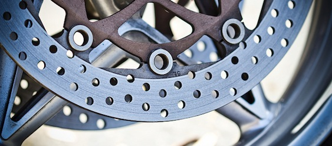
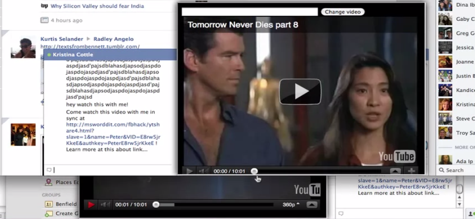
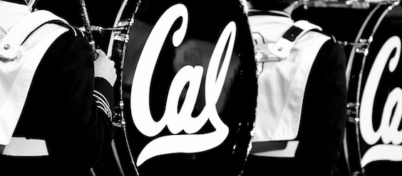

Welcome!
Please use the Arrow keys or Swipe Gestures for Navigation
▼
Photography
Origins
I started photography at the end of my senior year in order to capture my favorite places around UC San Diego. Since then I've joined the Blue and Gold Yearbook team at Berkeley in order to photograph campus events, and I'm also an active member of the UCSD Photography club. My favorite photography is architecture, macro, and landscape.
Work
In addition to the photos on this website, I also have other work available at my Flickr Photostream. I also have included some of my favorite photos below


Code

CS 184 - Computer Graphics
Ray Tracer
The best assignment (by far) for CS 184 was programming a complete ray tracer in C++. It was incredibly exciting (and sometimes intimidating) to build everything from the ground up; ray-sphere intersection tests, transformation matrices, homogenous coordinates, camera locations, and everything else was coded from scratch. At the end of the assignment though, I had a piece of software that I was really proud of.
After getting the basics down, I went the extra mile and implemented some other features. I got soft-shadows working (as well as non-linear projection). To make some nice final renders, I wrote a python script to generate interesting scene files.


Parametric Surfaces
We also completed a small assignment on Parametric surface subdivision, using both a uniform and adaptive algorithm. The assignment was rather simple, but it was really exciting to see an application of such a theoretical concept into actual code to produce a real model. The triangle-based adaptive subdivision algorithm was also fun to code and produces really intricate patterns in the final models.
Particle Simulator
My final project for CS 184 was a gravity particle simulator with user interaction. Once complete, I was able to watch orbits evolve over time from different configurations. It still astounds me how such random positions and velocities (when put into a gravity simulator) can draw out such mathematically beautiful orbit paths.
This assignment was tricky in certain places though. I had to use a 3-2-1 set of Euler angles for camera position and orientation, and then I had to map angular velocities about each of the Euler basis vectors back into changes in each Euler angle. Ray picking from user clicks and getting the particle insertion GUI flow down was difficult (but rewarding) as well.
Report PDF Poster PDF Youtube VideoPeterMCottle.com
Programming this website
When I was shopping around for new personal website ideas, Hakim El Hattab's REVEAL.JS stood out as a really unique and interesting concept. The only downside was that Hakim's implementation was more focused on actual slide decks rather than a fully 3D, heirarchal navigation system for the web. Using his work as inspiration, I set out to implement a unique (and hopefully cool) way to present static content on the web.
Implementation
The majority of the heavy lifting is done via the webkit transition CSS3 property, which is an amazingly way to animate changes between CSS3 states. Once I realized this was the backbone of Reveal.JS, I set out to code my own CSS3 position classes and animate between them.
My original implementation was just animating a static X-Y grid, but that quickly became very restrictive and confusing. I then switched to a doubly-linked graph approach, where the connectivity between slides only exists within memory. Using the arrow keys simplify transfers the current viewport location. This method works great for maintaing intuitive navigation while also lifting any restrictions on the layout of slides.
HTML5
I also used HTML5 browser history to store the location and state of each viewport location, so you can easily link to and bookmark specific slides. You can also hit the back and forward buttons to traverse the slide graph in the exact reverse order... Try it out now!
Navigation
I wanted an intuitive navigation interface that was friendly for both power users and mobile devices. With these two in mind, I settled on a combination of keyboard navigation for "normal" browsers and swipe gestures for mobile devices and tablets. I think this reaches the perfect balance between ease of use and rapid traversal.
ME 280a - Finite Elements
ME 280A - Finite Elements
ME 280A was by far the hardest (and most rewarding) class of my academic career. Before taking the class, I thought I understood the finite element method - stiffness matrices, loading vectors, and everything else was quite intuitive and my Matlab scripts worked great.
Little did I know that my understanding only brushed the surface of the wonders of the finite element method. Basis functions, Galerkins method, the Best Approximation theroem, and the derivation of the weak form were all unknown to me. After Professor Zohdi's lectures, seven rigorous homework assignments, and an intense final test I finally feel like I have a deep understanding of the subject. I also loved hearing about the history of FEM and how a lot of this original NASTRAN software actually brought us to the moon.
Basis Functions
One of our first assignments was a simple 1D FEM solver in matlab, but we were instructed to use linear, quadratic, and cubic basis elements. This assignment was a great demonstration of changes in the fundamental stiffness matrix based on basis function order. We also used the isoparametric mapping to do all calculations and integrals over the master domain, which then allowed us to employ Gaussian quadrature to speed up the integration. This assignment was a great introduction to FEM and laid the basis for the rest of our work (no pun intended :P )
PDFPre-Conditioned Conjugate Gradient Solver
Our next major homework assignment was to program an FEM solver with element-by-element storage and a Conjugate Gradient solver. Rather than storing the entire stiffness matrix, we instead moved towards storing only the unique elements of each elemental stiffness matrix; this seriously reduced our memory overhead (at the expense of more complex algorithms). We then employed a preconditioned conjugate gradient solver that seriously sped up our solution process (effectively reducing it from O(N^3) to O(N)). This homework assignment showed us the practical implementation details of the FEM method and the benefit of working on performance.
PDFTime Dependency
The next major homework assignment was looking at one dimensional, time-dependent ODE's. We explored the derivation of the explicit and implicit forms and ended up programming the implicit version. From programming this assignment, I got a great feel for how time-dependence affects the weak formulation and the process of iterating through a given variable. We also produced some very nice-looking plots...
PDF2D Thermal Conductivity
Our last major programming assignment was implementing the finite element method on a thermal conductivity ODE over a two dimensional arch. We had to write both a uniform and adaptive arch mesher to actually produce the connectivity matrix and nodal locations; after this challenge was complete, we had to implement the entire FEM method from scratch in two dimensions. I chose to implement everything in terms of anonymous functions (similar to a Scheme approach) which simplified some of my functionality down the line.
PDFFinal Exam
The final exam was the first (and only) test we had on the theoretical parts of the class. After 15 weeks of pure theoretical lectures, we had a lot to study to prepare :O For three straight days, three other students and I studied in Blum Hall's basement on campus and endlessly drilled on the theoretical parts of the class.
The interesting thing is that after these three days, I actually understood everything. It wasn't like a typical class where you memorize the important concepts and regurgitate them on the test... this was something else altogether. At the end of those three days, we all knew how to derive the weak form for any ODE (whether or not it was non-linear, spatially variant, three dimensional, time-variant, etc etc). We derived (by ourselves) the variables for the Conjugate Gradient method, the process of linearizing and iterating through a non-linear time-variant ODE, the geometric error as a function of the Jacobian mapping, the divergence theorem, Galerkin's best approximation theorem, and many others. It was a crazy 72 hours of my life, but I left that classroom feeling like a graduate student for the first time.
Last HW PDFFacebook Hackathon Hacks
Emoti-Face
Idea
For the Facebook Hackathon 2011 finals, Anirudh, Josh, and I set out to create a gif-embedding service for Facebook chat. We wanted to be able to inline gifs into chat and record our own, but the real challenge was the idea we used to transfer data between parties.
We essentially decided to transfer the actual binary data of the recorded gif through Facebook chat automatically. This meant writing a huge userscript to actually implement a crude TCP-like protocol and algorithm to send packets through the actual website.
Implementation
We had a localhost python server running to load up the file binary data, convert them to base64 text, and then form actual packets with UUID's and sequence numbers. We dumped all of those packets over localhost into a user script running on Facebook's website. From here we used javascript to populate the chat field and applescript (on the backend) to emulate keypresses. This worked great, until we discovered that Facebook's chat would drop all packets after the first 20.
We then had to essentially come up with a crude TCP-like protocol for handshakes and packet requests. It was pretty hilarious (and quite ironic) that we were implementing TCP on top of TCP, but that's what hackathons are all about!
Results
At the end of 24 hours, we actually had something that worked! We were able to send files over chat and recompile them on the other side. The transfer speed was abysmal, but I think the entire team was simply proud that we got it to work :P
Youtube Video showing Transfer HackerNews Article GitHubYoutube Sync
Idea
I always liked watching youtube videos together with friends (in real life), but sending them a link over chat just isn't the same experience. I set out to create a youtube sychronization service that embedded into Facebook chat and would sychronize playback between two parties.
Implementation
This hack was pretty simple; it was a userscript running on Facebook to listen for keypresses and embed an iFrame when a youtube link was pasted into chat. There was an external site that handled the youtube embedding and javascript to sychronize the player state, and then I used the excellent Now.JS running on a Node.js instance on heroku to handle the state relays between parties. After a lot of tweaking (and wrestling with the finicky Youtube flash player), I ended up getting something that worked pretty well!
Results
 Youtube VideoEducation
UC Berkeley - Graduate

Graduate Study
My time at UC Berkeley has been absolutely priceless. The research on campus (in all engineering disciplines) is absolutely brilliant, and being surrounded by such successful peers has driven me to excel in everything that I do. The campus has a great deal of legacy as well, which makes me try even harder to fill the giant shoes left behind by previous Berkeley alumni classes.
Since I'm a graduate student in the MS/PhD Program, I'm not sure when my stay will end, but I have enjoyed every minute of it so far. Go bears!
My ResumeUC San Diego - Undergraduate

Curriculum
I actually studied Mechanical Engineering at UC San Diego for my undergraduate degree. When I began college, I found the introductory CS classes to be fairly straight-forward as someone with a previous programming background. In order to get the most out of my degree, I wanted a major where I was challenged in every class and exposed to completely new concepts. I found exactly that in Mechanical Engineering.
Mechanical study is a completely different (and amazing) beast as compared to computer science. The Navier Stokes equation, electrical design, thermodynamics, heat transfer, fluid mechanics, intermediate dynamics - all of these subjects had a rigorous theoretical basis that really expanded my mind and taught me to think in new and entirely different ways. I decided to teach myself programming in my spare time while taking mechanical classes to get the best of both worlds. I owe a lot of my intellectual ability to the mechanical classes I took and the ways they challenged me.

Tour Guides
The most rewarding experience of my undergraduate degree (after the curriculum) was serving as a University College Ambassador for two years. I had never been the strongest public speaker in high school, and I highly admired the confidence and ease with which the tour guides at UCSD presented. After taking on other jobs to gain experience, I finally applied, trained, and graduated to a university tour guide my junior year.
After the 10 week training program, I finally reached the presentation / public speaking "zen" that other tour guides displayed so prominently. After enough practice and worry and stress about being the "perfect" public speaker during training, I finally abandoned that entire mode of thought and instead decided to just present as myself. It was this change in mindset that led to me to become a great tour guide, and I had the pleasure of speaking to thousands of UC San Diego visitors over the course of my career.

A photo of other tour guides and myself in a UCSD brochure
Culture
I absolutely loved living in San Diego for four years. The weather was excellent, the beach was right next to campus, and the entire city has focus on living a healthy lifestyle. Sometimes I think that Silicon Valley could benefit from some of the "laid back" atmosphere that San Diego exemplifies :P
After running cross country in high school, I ran a marathon my sophomore year (2:47) and then switched to triathlon full time. In addition to photography, I love to swim, bike, and run all over whichever city I currently reside in. I also try to keep up to date with technology news, and sometimes I steal away time to practice my secret hobby of ceramics

At the San Diego Zoo